(1)登入摄像机
打开浏览器,输入摄像机IP. 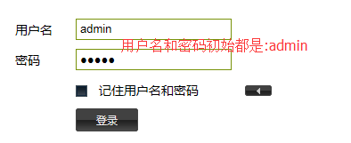(2)输出联动设置
 按下图所示设置.
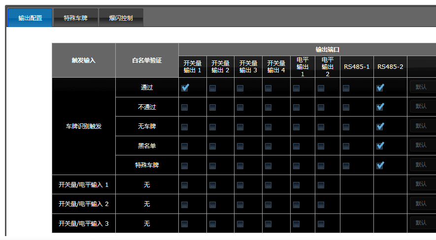
按下图所示设置.
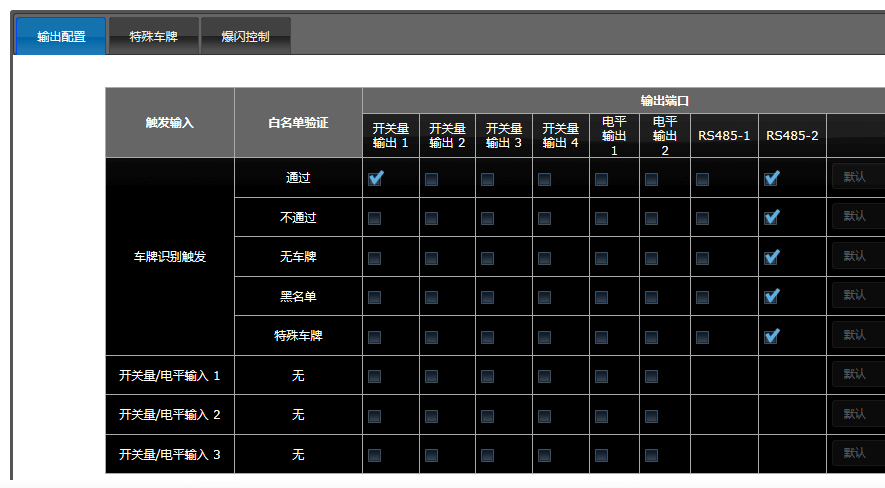
(3)白名单设置
 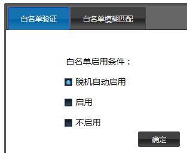
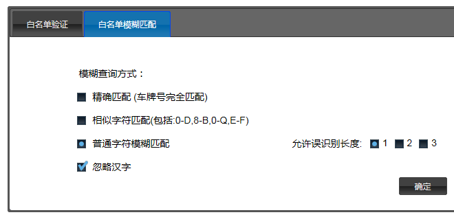
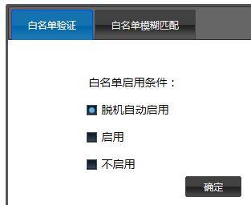
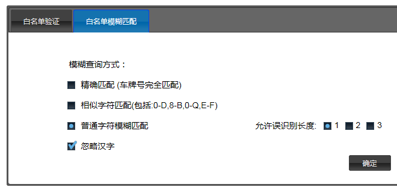
(4)串口设置

 注意:下图除了勾选"车牌类型"外其它选项都不要勾.
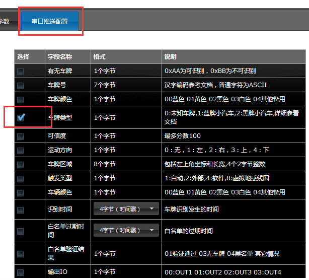
!!!若发现显示屏乱码或黑屏的,请将"车牌类型"的勾选去掉,并保存.!!!
继续按下图所示设置.
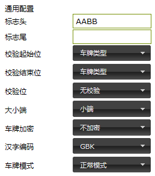
语音配置各选项输入自定义的文字.
注意:语音头不要输入文字,否则显示会出现乱码.
注意:下图除了勾选"车牌类型"外其它选项都不要勾.
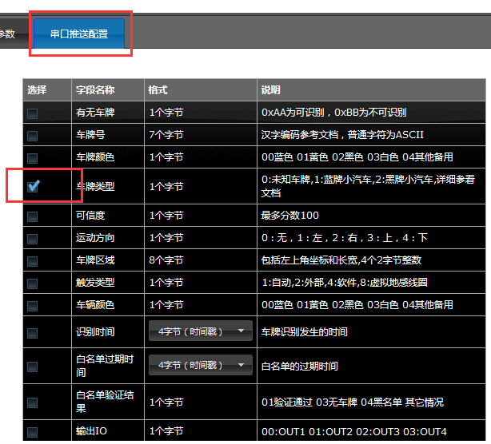
!!!若发现显示屏乱码或黑屏的,请将"车牌类型"的勾选去掉,并保存.!!!
继续按下图所示设置.
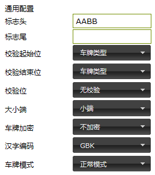
语音配置各选项输入自定义的文字.
注意:语音头不要输入文字,否则显示会出现乱码.

 上图状态有4个:有效期内白名单、白名单内已过期、不在白名单内、白名单剩余天数。
例如:状态选择"有效期内白名单",语音尾为"欢迎回家",当白名单车辆鄂A66666经过时,显示屏会显示对应
信息并播报"鄂A66666欢迎回家",语音尾的内容根据实际情况设置.
上图状态有4个:有效期内白名单、白名单内已过期、不在白名单内、白名单剩余天数。
例如:状态选择"有效期内白名单",语音尾为"欢迎回家",当白名单车辆鄂A66666经过时,显示屏会显示对应
信息并播报"鄂A66666欢迎回家",语音尾的内容根据实际情况设置.